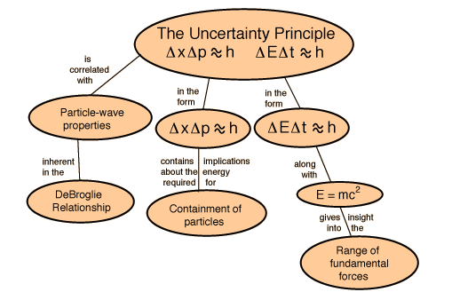

Particle lifetimes from the uncertainty principle
Prediction of zero-point energy for harmonic oscillator
Conflict with general relativity at small scales
Index
HyperPhysics
*****
Quantum Physics
R Nave
Go Back